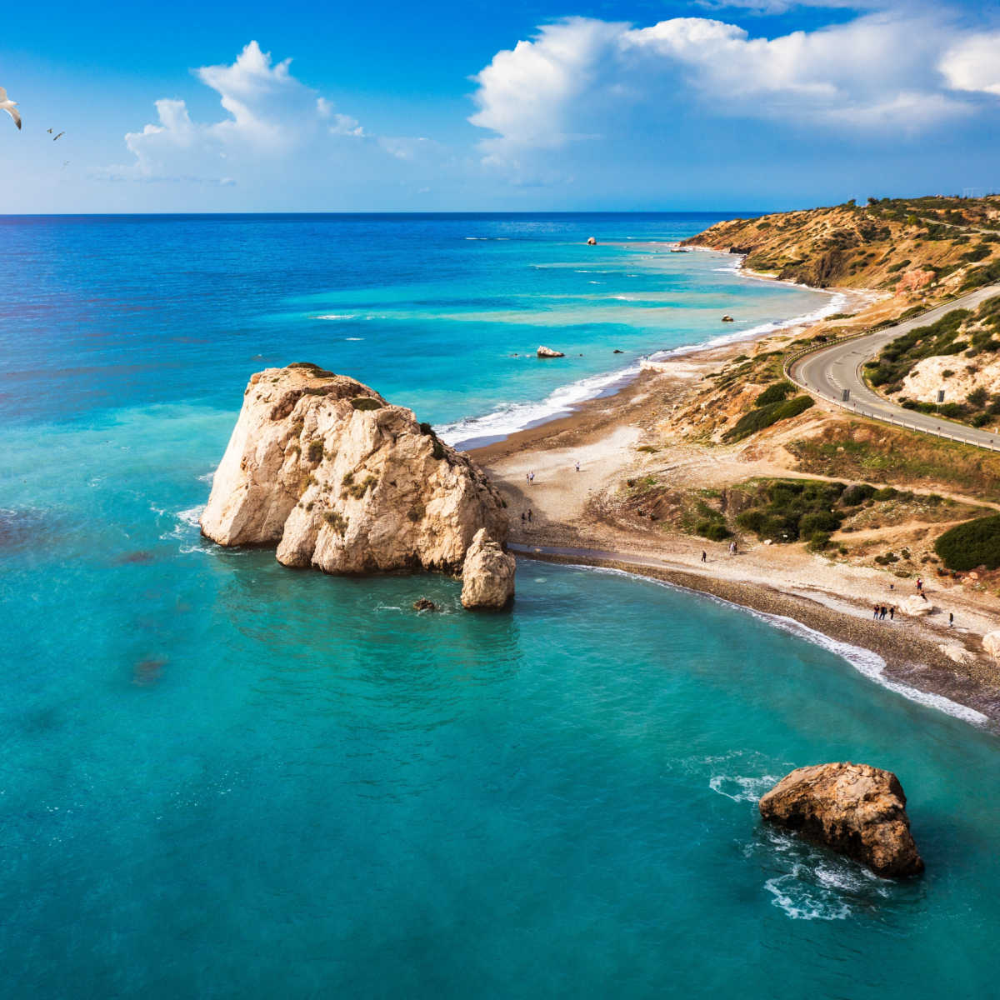
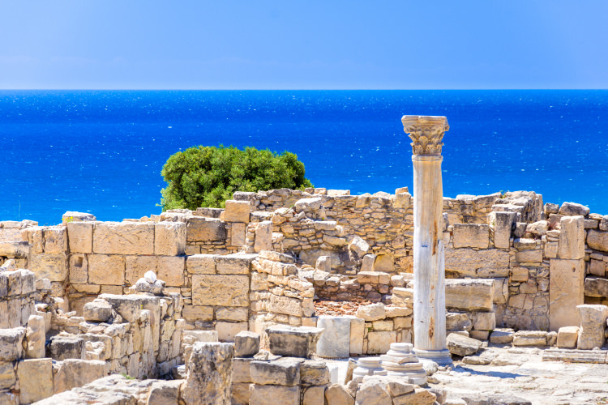
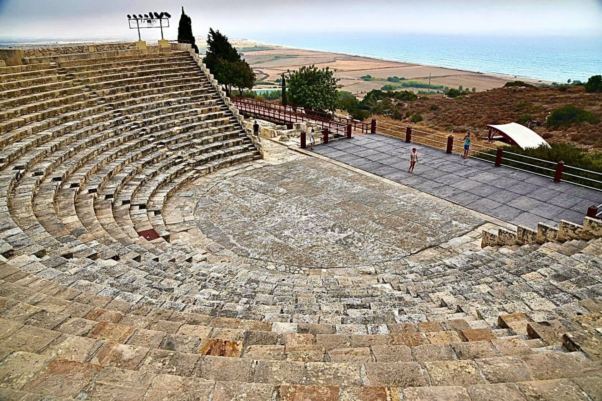
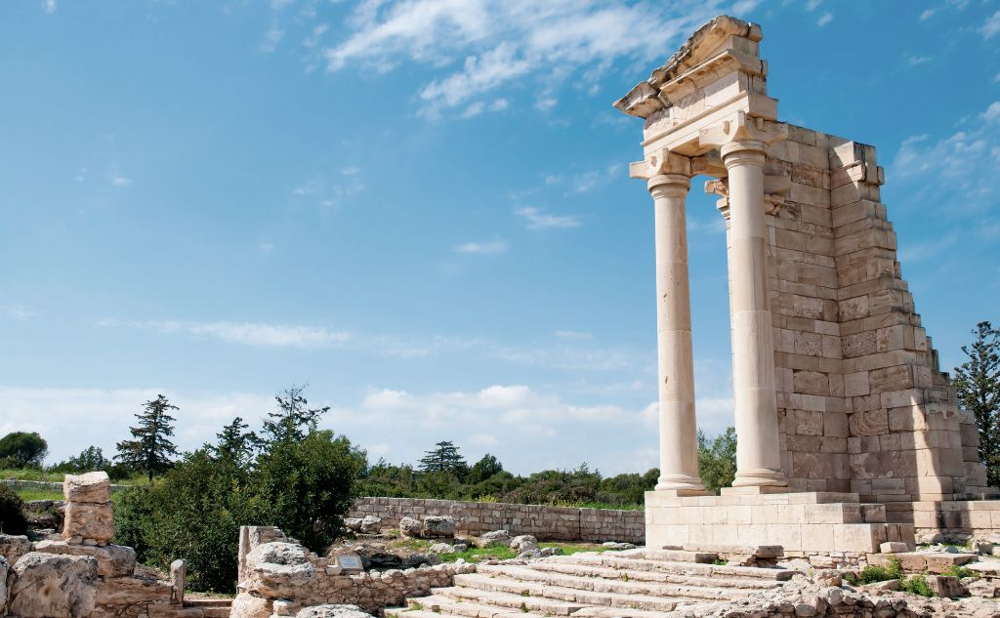
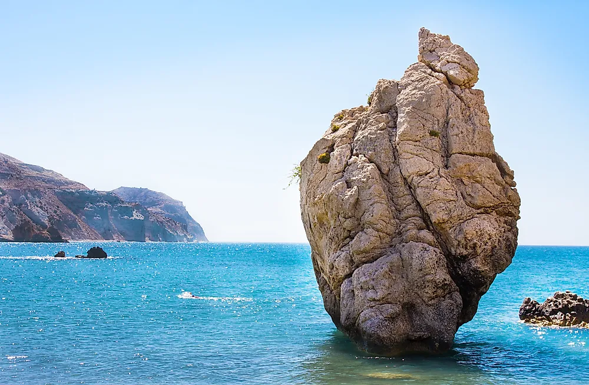
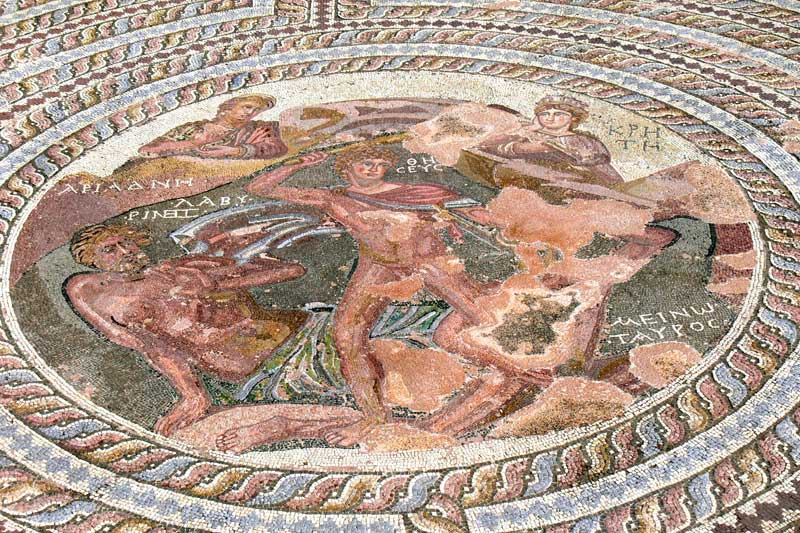
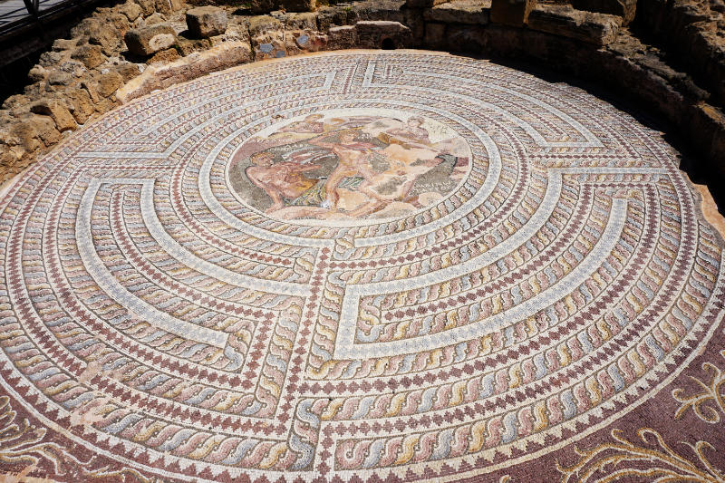
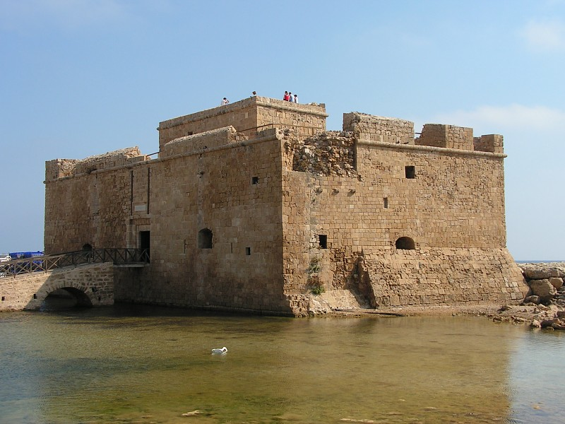
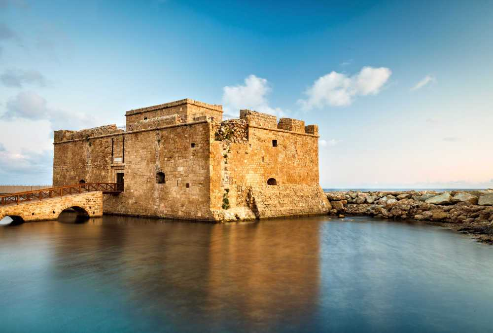

Where myth, marble, and the Mediterranean meet.
神话、石柱与地中海交汇之地。
四个传奇之地，一日难忘之旅。
We're heading west to Paphos — a UNESCO World Heritage city woven from 3,000 years of Greek, Roman, and Byzantine history. Bring your camera, your curiosity, and good walking shoes.
我们将一同前往帕福斯——一座被联合国教科文组织列为世界遗产的古城， 交织着希腊、罗马与拜占庭三千年的历史。请带上您的相机、好奇心，以及一双舒适的步行鞋。
A Greco-Roman city carved into a cliff above the deep blue Mediterranean.
一座建于地中海悬崖之上的希腊罗马古城。
Kourion's 2nd-century theatre still hosts performances under the open sky — and from its top row, the sea stretches uninterrupted to the horizon. We'll walk past Roman villas, intricate floor mosaics, and the early Christian basilica.
库里翁的公元二世纪古剧场至今仍在露天上演节目—— 从最高一排望去，碧蓝大海一直延伸至天际。我们将漫步于罗马别墅、 精美的地面马赛克与早期基督教巴西利卡之间。



The legendary birthplace of Aphrodite, goddess of love and beauty.
爱与美之女神阿芙罗狄蒂的传说诞生之地。
Where sea-foam meets a perfect sea-stack, Greek myth says the goddess herself rose from the waves. Today it's one of the most photographed coastlines in the Mediterranean — and a sunset here has become a Cypriot rite of passage.
在海浪与一座完美的海中礁石相遇之处， 希腊神话讲述着女神由此从浪花中诞生。 如今，这里是地中海最常被定格的海岸之一—— 在此看一次日落，已是塞浦路斯的"成年礼"。

Roman mosaics so detailed, they stop time.
细致入微的罗马马赛克，让时光在此驻足。
A UNESCO World Heritage Site covering nearly the entire ancient western city of Paphos. The Houses of Dionysos, Theseus, Aion, and Orpheus hide breathtaking floor mosaics — many in their original positions for over 1,600 years.
这里是联合国教科文组织世界遗产， 几乎涵盖整座古帕福斯西部城市。 狄俄尼索斯、忒修斯、艾翁与俄耳甫斯之屋之中， 藏着令人屏息的地面马赛克—— 其中许多已在原位静静伫立超过1600年。


Free time for lunch by the harbour, beneath a medieval castle.
在中世纪城堡之下，临港畔自由用餐时间。
The day winds down at the old fishing harbour of Paphos. Tavernas line the waterfront, fishing boats bob in the bay, and the medieval Paphos Castle stands watch at the pier's end. This is your free time for lunch — pick a taverna, gather your friends, and toast the day. Meals are at your own expense.
一天的最后一站，是帕福斯古老的渔港。 海边小馆林立，渔船在港湾轻摇， 码头尽头的中世纪帕福斯古堡静静守望。 这是自由活动用餐时间——选一家小馆， 与朋友相聚，举杯庆祝这一天。餐费请自理。


出行前的准备
Saturday, 02 May 2026
2026年5月2日 · 星期六
Whole-day event · Hours TBA
全天活动 · 具体时间待定
Bus pickup
大巴统一接送
Pickup at Apollonia Residences. Time will be announced.
阿波罗尼亚学生公寓集合 · 时间另行通知。
Free for MScEST students
MScEST学生免费
Trip is free · lunch at the harbour is at your own expense.
行程免费 · 港口午餐费用请自理。
02 · 05 · 2026
MScEST
Cyprus University of Technology